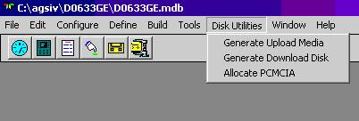
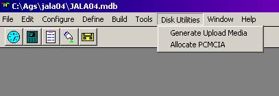
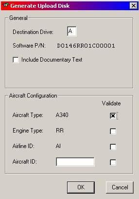
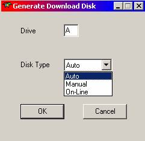
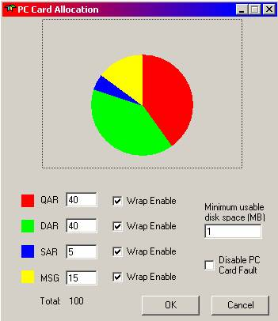
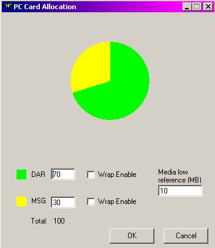

AGS IV has many utilities that enable the user to prepare media (either floppy disks or PCMCIA cards) that can be used to upload an application that was built with AGS IV or to allocate the file sizes on PCMCIA.

Figure 14.1a: FDIMU Main Menu with Disk
Utilities option selected

Figure 14.1b: iDMU Main Menu with Disk Utilities option
selected.
From the Disk Utilities menu, the following functions are available.
After an application is built and verified (that no errors have been detected during the compile or build steps; see below), the executable image of the application may be transferred to an upload media for upload into the airborne unit. This menu selection performs the transfer function (see Figure 14.1).

Figure 14.2a: FDIMU Generate Upload Disk option of Disk Utilities Menu
Once the selection is made, the developer is presented with a form (see Figure 14.2a for FDIMU and Figure 14.2b for iDMU) to enter the drive letter of the upload media. For FDIMU, the user can also has an opportunity to select validation for aircraft type, engine type, airline ID, or aircraft ID. If the ‘validate’ box is checked for any of these options, the application will not upload unless that option has been validated by the software. For example, if aircraft type ‘A340’ is checked, then the application will only upload onto an A340 aircraft.
In addition to the executable application, this step also stores, on the media, the configuration information that is used during the upload into the airborne unit.
Figure 14.2b: iDMU Generate Upload Disk option of Disk Utilities Menu
For FDIMU only. In order to save flight data using an airborne data loader on board the aircraft, a download disk must be prepared by AGS IV.

There are three types of download disk: Auto, Manual, and On-Line.
An Auto download disk will enable any reports that are defined as automatically routed to the Loader in AGS IV (via the Routing Tab of the report definition. See chapter 6, Reports) to be written to the floppy disk at the moment of generation.
A Manual download disk will enable any reports that are defined as automatically or manually routed to the Loader in AGS IV to be written to the floppy disk whenever the report is manually generated on board the aircraft. If the disk is not in the loader at the time of manual generation, no file will be written to the disk if one is inserted later.
An On-Line download disk will enable any reports that are defined as automatically routed to the Loader in AGS IV to be written to the floppy disk if the report had been generated but the disk was not in the loader at the time of generation. If a disk is inserted later, the report will still be written to the disk.
This function allows you to allocate the space that will be used on a PCMCIA card if one is inserted in the ACMS hardware on the aircraft (if an integrated disk drive is available). Allocation is specified in percentages. The total allocation must not exceed one hundred percent. AGS IV will not allow the user to exceed that amount. Next to the allocation of each file type, there is a ‘Wrap Enable’ checkbox. If checked, the recording device, if it reaches the maximum space allocated on the PCMCIA card, will start recording at the beginning again, overwriting any data that was previously recorded. For FDIMU, the minimum usable disk space mandates how much free space, in megabytes, is required on the PCMCIA card. The ‘Disable PC Card Fault’ checkbox will prevent the DMU from outputting a fault if there is no PCMCIA card. Some aircraft systems record such a fault and this could cause inconvenience if no PCMCIA card is used during flight.

Figure 14.4a: FDIMU PC Card Allocation option of Disk Utilities menu.

Figure 14.4b: iDMU PC Card Allocation
option of Disk Utilities menu